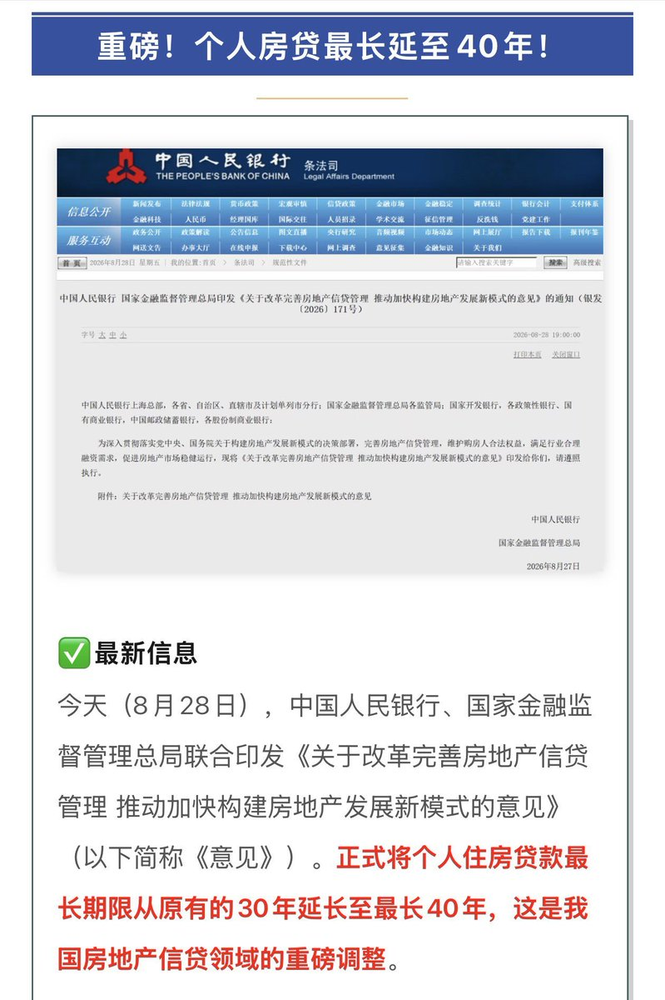

个人住房贷款从30年延长到40年，根本就不是让老百姓买房更轻松，而是让人当一辈子的房奴。同样是100万，按利率3%计算。原本30年月供4216，利息是51万8；现在40年月供3581，利息71万9。看样子每个月少还635块，利息多了20万1，赚的钱都在给银行打工
社会经济下行后，很多人收入增长开始非线性，大家短期还贷压力大都不敢贷款了，不贷款谁买得起房？没人买房，那中国的土地卖给谁呢？以前房价增速跑赢房贷利率，大家都喜欢贷，现在不一样了，所以政府要让老百姓有种买得起的感觉。银行只需要把风险锁在40年里，如果0首付、房贷比租房便宜，那估计一堆人冲了会对楼市有帮助
回到个人角度，除了体制内谁能保证自己有四十年的稳定收入，能在三十岁以后保证自己有个工作都谢天谢地了。估计下一步国家就得增加一个父母还不上子女继续还的法律规定，然后房贷从40年改成60年。以后非核心区域的房价会越来越低，买完房想出手了，却发现当时贷款总还款可以买现在两套房，那会有多绝望呀
社会经济下行后，很多人收入增长开始非线性，大家短期还贷压力大都不敢贷款了，不贷款谁买得起房？没人买房，那中国的土地卖给谁呢？以前房价增速跑赢房贷利率，大家都喜欢贷，现在不一样了，所以政府要让老百姓有种买得起的感觉。银行只需要把风险锁在40年里，如果0首付、房贷比租房便宜，那估计一堆人冲了会对楼市有帮助
回到个人角度，除了体制内谁能保证自己有四十年的稳定收入，能在三十岁以后保证自己有个工作都谢天谢地了。估计下一步国家就得增加一个父母还不上子女继续还的法律规定，然后房贷从40年改成60年。以后非核心区域的房价会越来越低，买完房想出手了，却发现当时贷款总还款可以买现在两套房，那会有多绝望呀
